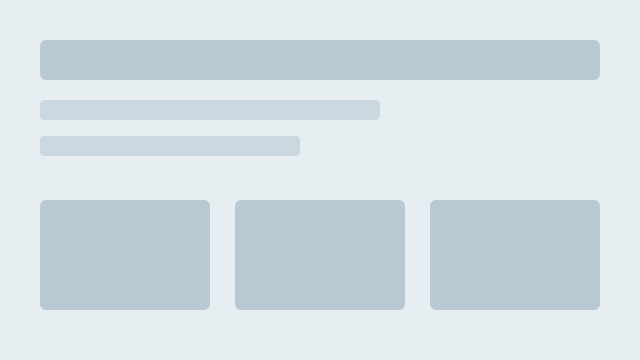

Professional Digital Portfolio Website
A responsive, multi-page website that introduces me as an aspiring IT professional and showcases my skills, projects and reflections. Built for the ITPP5112 practical assignment and published with GitHub Pages.
View portfolio code on GitHub